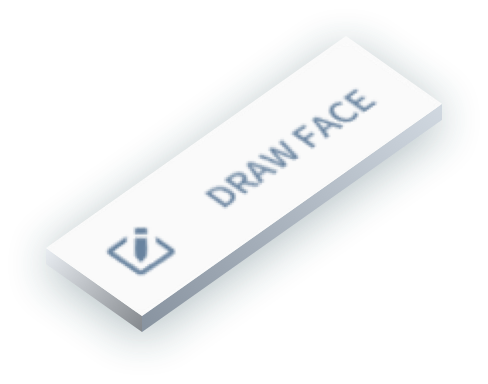
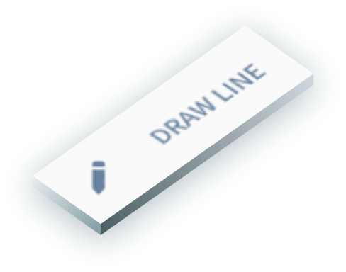
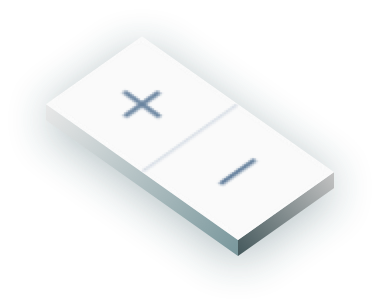
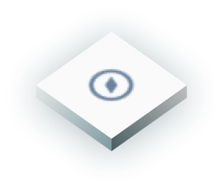
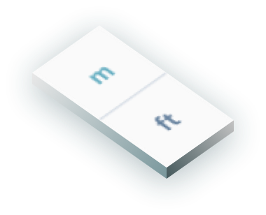
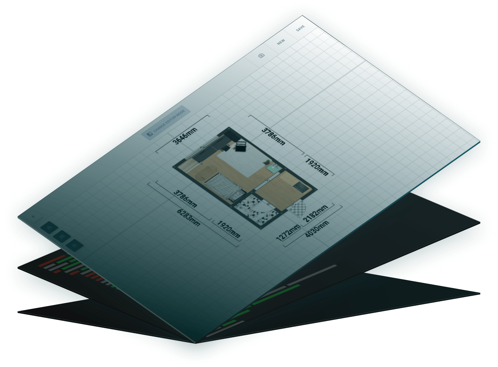
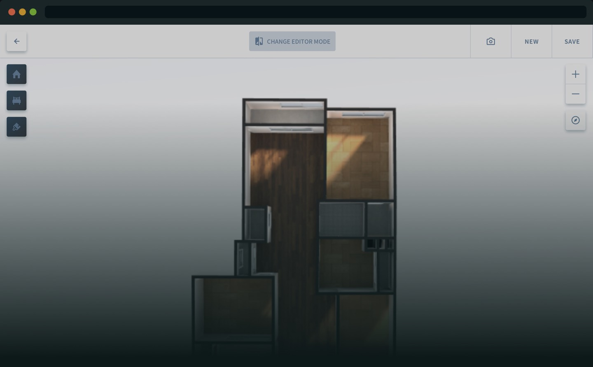

Welcome to the Official Archisketch API. Archisketch.JS is a javascript library for building Floorplan Editor
Get powerful interior design tool you can use Anywhere, Anytime for Free.
Component-Based Floorplan editing functions
The Archisketch API is encapsulated as functions.
The component logic is written in JavaScript, so you can easily transfer and maintain the data.
Attach the Floorplan Editing functions to your app and make it even more powerful.






Web Cloud-based System
Web-based 3D environment
View the floorplans in live 3D Web-based environment.
Our 3D Viewer provides of Top, ISO and Indoor views.
From PC to mobile
Whether your device is a pc or a mobile phone, if it is connected to the Internet,
you can efficiently edit and view the floorplan Anywhere and Anytime.

furnish virtual spaces with 3D objects
Archisketch.js is compatible with other 3D files
( created using 3D programs such as Max, Maya, and Blender )
* The applicable 3D file format is written in detail
in the Archisketch.js document.